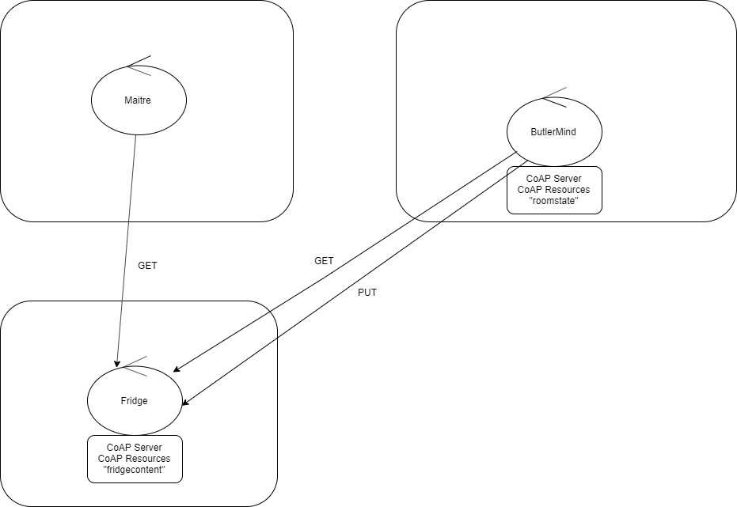
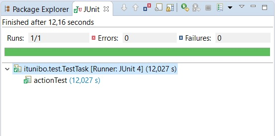

Requirements
Nello SPRINT4 è stato implementato il supporto al Fridge.
Inoltre è stato aggiunto il supporto, oltre che al robot fisico, anche al robot virtuale.
- Fridge deve esporre il proprio contenuto al Maitre
- Fridge deve poter essere interrogato dal Butler riguardo alla disponibilità di un determinato cibo
- Fridge deve comunicare con gli altri attori tramite il protocollo CoAP
Inoltre è stato aggiunto il supporto, oltre che al robot fisico, anche al robot virtuale.
Requirement analysis
Fridge deve esporre un'interfaccia CoAP con cui soddisfare i requisiti sopra citati.Problem analysis
- Il Fridge deve poter comunicare il proprio contenuto al Maitre, è necessaria una risorsa CoAP che esponga il contenuto del Fridge.
- Questa risorsa deve anche poter essere interrogata dal Butler, ed eventualmente essere modificata dal Butler nelle fasi in cui un cibo viene prelevato / depositato nel Fridge.
- Il Butler invia un dispatch al Maitre ogni volta che preleva / deposita un cibo / piatto da un qualsiasi device.
- Predispongo un'interfaccia CoAP osservabile anche per il Butler, in questo modo non devo preoccuparmi della comunicazione tra gli attori, ma semplicemente dell'aggiornamento della risorsa.
Project
Il Fridge è stato implementato come un server CoAP, in cui vi è un'unica risorsa fridgecontent che è il contenuto del Frigo. Per aggiornare automaticamente il Maitre sulle modifiche che avvengono alla risorsa, sfrutto la possibilità offerta da CoAP di rendere una risorsa osservabile. Per permettere l'aggiornamento di una risorsa prevedo, oltre al metodo GET, anche il metodo PUT, tramite il quale il Butler può modificare il valore di uno o più cibi presenti nel Fridge.Per interrogare il Fridge sulla disponibiltà o meno di un cibo utilizzo sempre il metodo GET, aggiungendo un payload contenente il nome e la quantità richiesta di uno specifico cibo.
Architettura logica
 In questo sprint sono stati sviluppati:- Fridge CoAP Server e risorsa CoAP fridgecontent
- Butler CoAP Server e risorsa CoAP roomstate
- Aggiunta del supporto al robot virtuale
Testing
Esecuzione testTask
Esecuzione testAction